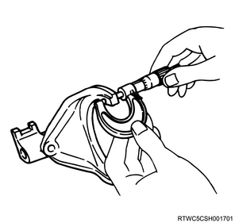
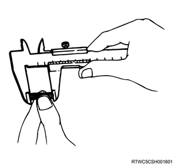
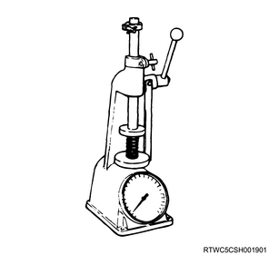

1. Inspect the 1st - 2nd shift arm.
Note
2. Measure the 1st - 2nd shift arm using the micrometer.
Note
Standard： 9.60 to 9.85 mm { 0.378 to 0.388 in }
Limit： 9.0 mm { 0.354 in }

1. Inspect the 3rd - 4th shift arm.
Note
2. Measure the 3rd - 4th shift arm using the micrometer.
Note
Standard： 9.60 to 9.85 mm { 0.378 to 0.388 in }
Limit： 9.0 mm { 0.354 in }
1. Inspect the reverse - 5th shift arm.
Note
2. Measure the reverse - 5th shift arm using the micrometer.
Note
Standard： 9.60 to 9.80 mm { 0.378 to 0.386 in }
Limit： 9.0 mm { 0.354 in }
1. Inspect the detent spring.
Note
2. Measure free length using a vernier caliper.
Note
Standard： 26.8 mm { 1.06 in }
Limit： 26.2 mm { 1.03 in }
Note
Standard： 26.6 mm { 1.05 in }
Limit： 26.0 mm { 1.02 in }
Note
Standard： 27.6 mm { 1.09 in }
Limit： 27.0 mm { 1.06 in }

3. Measure tension using the spring tester.
Note
Compressed height： 20 mm { 0.787 in }
Limit： 87.2 to 97.1 N { 19.6 to 21.8 lb }
Note
Compressed height： 20 mm { 0.787 in }
Limit： 26.5 to 36.3 N { 5.96 to 8.16 lb }
Note
Compressed height： 20 mm { 0.787 in }
Limit： 93.5 to 103.3 N { 21.0 to 23.2 lb }
